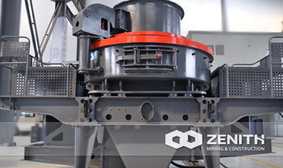
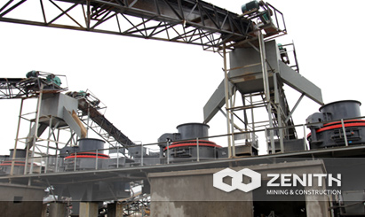
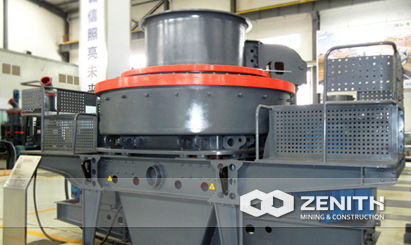

- 
- 
- 
Deep Rotor Vertical Shaft Impact Crusher
Deep Rotor VSI Crusher integrates many patents and three crushing methods, is a new and high efficiency crusher. It is a key equipment to provide excellent aggregate to highway, railway and water resource industry. The adaptation of deep chamber makes the throughput of materials increase by about 30%. In addition, the direction of side plate can be adjusted upside down after it's partially damaged, which will be able to bump up material using rate and prolong life span by more than 48%.
widely Applications of Deep Rotor VSI Crusher
The most outstanding feature of deep rotor VSI crusher is that it integrates three crushing methods into one. All of these made it the core equipment in sand making industries. It is widely used in a variety of metals and non-metallic minerals, cement, refractories, abrasives, glass raw materials, construction aggregate, sand, metallurgical and other industries. As for processing minerals, Zenith's deep rotor VSI crushers are applicable for medium and fine crushing of various ores and rocks, such as iron ore, non-ferrous metal ore, corundum, bauxite, quartz sand, corundum, perlite, basalt materials. It incorporates three crushing styles: material on material, material on iron and falling at side. It is widely used in a variety of fields such as minerals, cement, sand, metallurgical and other industries.
Deep Rotor VSI Crusher unique features and advantages
- Deep cavity-type rotor design is optimized to increase material pass-through volume by 30%.
- The core abrasion-resistant material is high degree wear-resistant and temperature-resistant material.
- Diamond-shaped impact block avoids stand plate being damaged after wear out.
- Modular-design hammer, just to replace worn parts when wear out, it can reduce cost more than 30%.
- Special seal structure in the spindle end, ensure no oil leak even without oil seal.
- Hydraulic openings device uses Japan imported parts, it is easy and quick to move upper d, so the internal mechanical overhaul and replacement cost less labor effort.
- Optimal shooting mouth and more fluid curve-shaped design reduce the resistance to the material flow, improving material pass-through capacity as well.
The tacnology data
| Model | Feed at center&sides | Feed at center | Soft Material | Hard Material | REV (r/min) | Power (kw) | Motor Model | Machine Size (mm) |
|---|---|---|---|---|---|---|---|---|
| Capacity (t/h) | Max.Feeding (mm) | |||||||
| B-7615DR | 150-280 | 70-140 | 35 | 30 | 1700-1900 | 4-75×2 | Y280S-4/75 | 4100×2330×2300 |
| B-8522DR | 240-380 | 120-190 | 40 | 35 | 1500-1700 | 4-110×2 | Y315S-4/110 | 4140×2500×2700 |
| B-9532DR | 350-540 | 180-280 | 45 | 40 | 1300-1510 | 4-160×2 | Y315L1-4/160 | 4560×2600×2900 |
| B-1145DR | 500-640 | 250-360 | 50 | 45 | 1100-1310 | 4-220×2 | Y355M1-4/220 | 5000×2790×3320 |